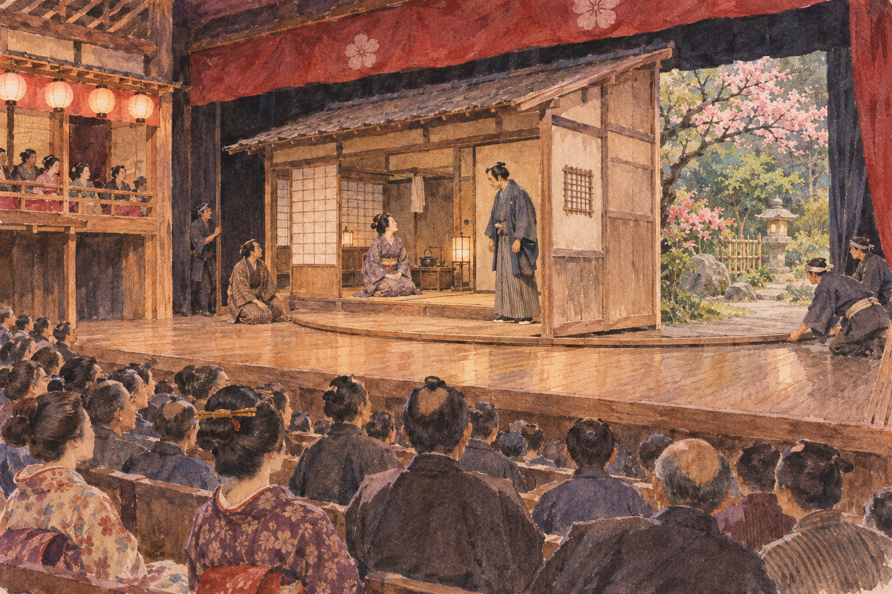

아시아대양주 · 일본
일본의 회전무대 — 집 한 채가 돌아가면 다음 장면이 열린다
시드모어의 관찰로 읽는 배우의 길과 무대 아래 협업

연극의 장면이 바뀔 때마다 막을 내리고 가구를 옮겨야 할까. 일본 극장의 회전무대는 무대의 일부를 돌려 다른 공간을 보여 주었다. 19세기 말 여행자 엘라이자 시드모어의 관찰을 따라가면, 놀라운 무대 효과 뒤에 바닥 아래에서 일하던 사람들과 객석의 특별한 구조가 함께 나타난다.
01. 여행 기록이 보여 주는 특정한 극장
『일본의 인력거 여행』은 당시 외국 방문객이 경험한 생활과 공연을 기록한 책이다. 여기서 묘사하는 극장을 일본의 모든 시대와 모든 공연장에 똑같이 적용할 수는 없다. 글쓴이의 감탄과 비교에는 그가 익숙했던 서양 공연의 기준도 들어 있다.
그 점을 구분하면 기록은 유용한 단서가 된다. 무대가 어떻게 움직였는지, 배우가 어느 길로 나타났는지 같은 구체적인 묘사를 살필 수 있기 때문이다. 오늘의 극장을 설명하는 최신 안내서가 아니라 한 시대 관객이 본 장면의 증언으로 읽는 것이다.
02. 배우가 객석 사이에서 나타나는 길
시드모어는 배우들이 객석을 지나는 높인 길을 따라 들어오는 모습을 기록했다. 하나미치라고 불리는 통로다. 배우가 언제나 무대 옆의 문에서만 나온다고 생각하던 관객에게는, 자기 가까이에서 장면이 시작되는 경험이 새로웠을 것이다.
이 길은 배우의 이동을 객석과 연결한다. 관객은 멀리 있는 무대만 보다가 가까이 다가오는 인물을 따라 시선을 돌릴 수 있다. 공연의 공간이 무대 정면의 사각형 안에만 갇히지 않는다. 같은 이야기도 배우가 어디에서 출현하는지에 따라 다르게 느껴진다.
03. 바닥의 원이 다른 방을 보여 주다
회전무대에서는 바닥 일부가 큰 원형 구조를 이룬다. 그 위에 집이나 다른 장치를 배치하고 원을 돌리면, 조금 전에는 보이지 않던 면이 관객 쪽으로 온다. 무대 위의 물건을 전부 치우는 대신 바라보는 방향을 바꾸는 방법이다.
기록에는 집이 돌면서 다른 방이나 정원을 보여 주는 모습이 등장한다. 같은 집의 바깥과 안을 이어 보여 줄 수도 있다. 관객은 장면이 끊어져 새로 시작되기보다 서로 다른 공간이 이어진다고 느낄 수 있다. 기술이 이야기의 시간을 조직하는 셈이다.
04. 보이지 않는 아래층의 노동
시드모어가 본 구조에서는 바닥 아래의 사람들이 돌출된 막대를 밀어 무대를 돌렸다. 눈앞의 자연스러운 변화는 보이지 않는 곳에서 여러 몸이 힘을 맞춘 결과였다. 장면 전환의 놀라움과 작업의 수고가 서로 다른 층에 놓여 있었다.
빠르기와 멈출 위치를 맞추는 일도 중요하다. 기록에는 너무 빨리 돌아 배우가 말하는 도중 사라지는 우스운 상황도 나온다. 장치는 존재하기만 하면 저절로 완벽하게 작동하지 않는다. 연기와 조작의 호흡이 맞아야 효과가 이야기 안에 들어간다.
무대를 움직이는 시간은 배우의 대사와도 연결된다. 다른 방이 드러나는 동안 말을 이어 갈지, 이동을 기다릴지에 따라 관객이 느끼는 속도가 달라진다. 장면 전환은 대본 밖의 빈 시간이 아니라 공연이 시간을 쓰는 구체적인 방식이다.
바닥 아래의 사람은 앞에서 연기하는 배우를 관객과 같은 자리에서 보지 못한다. 그래서 신호를 듣고 맡은 일을 맞추는 관계가 중요하다. 공연의 정확함은 모든 사람이 전체를 내려다보아서가 아니라 서로 다른 자리의 일을 연결해서 만들어진다. 공간의 구획이 협업의 조건이 된 셈이다.
05. 실제 사물과 그림이 함께 만드는 풍경
당시 무대의 정원과 숲에는 화분의 나무나 옮겨 심을 식물도 사용되었다고 한다. 그려진 배경과 실제 사물이 한 장면에 섞인다. 무대는 완전히 진짜인 장소도 완전히 납작한 그림도 아니었다. 서로 다른 재료가 관객의 눈에서 하나의 공간이 된다.
작은 식물과 먼 배경의 관계를 어떻게 맞추는지에 따라 깊이가 생긴다. 연극의 사실감은 실제 물건을 많이 놓는 것만으로 결정되지 않는다. 배우가 그 사이를 어떻게 지나가고 빛이 무엇을 드러내는지도 장면을 믿게 하는 조건이다.
06. 감탄한 여행자의 말도 나누어 읽기
시드모어는 자신이 본 일본의 무대 효과를 높이 평가하면서 서양의 유명 배우와 공연을 비교했다. 이런 비교는 당시 외국 관객의 놀라움을 보여 준다. 그러나 어느 문화의 연극이 더 우월한지 판정하는 오늘의 기준으로 받아들일 필요는 없다.
그의 글에 나오는 당시라는 시간도 오늘과 같지 않다. 지금 모든 회전무대가 사람의 어깨 힘으로 움직인다고 설명하면 잘못이다. 역사 기록의 구체적인 기술을 배우되, 이후의 변화와 다른 극장의 가능성을 남겨 두어야 한다.
07. 장면이 바뀌는 순간에도 연극은 계속된다
회전무대는 무대의 변화를 숨기는 동시에 변화 자체를 볼거리로 만들 수 있다. 집이 돌아가 다른 방을 드러내는 짧은 시간에 관객은 공연이 만들어지는 방법도 어렴풋이 느낀다. 환상을 믿는 일과 장치를 알아보는 일이 꼭 반대일 필요는 없다.
다음에 공연을 볼 때에는 배우가 말하지 않는 순간도 살펴보자. 바닥이 움직이고 빛이 달라지며 사람이 다른 길로 들어오는 동안 이야기는 계속 진행된다. 눈에 띄는 효과를 만드는 데에도 서로의 타이밍을 맞추는 훈련이 필요했다. 일본 극장의 오래된 기록은 연극을 대사와 배우뿐 아니라 공간을 바꾸는 사람들의 협업으로 보게 한다.
이야기의 바탕이 된 자료
- Eliza Ruhamah Scidmore, Jinrikisha Days in Japan — Japanese Theatre ↗확인일 2026-11-06
하나미치·회전 바닥·아래층 인력으로 회전·집의 다른 방/정원 노출·회전 속도와 배우·실제 식물과 배경. 특정 시대의 관찰을 모든 현대 극장으로 일반화하지 않음